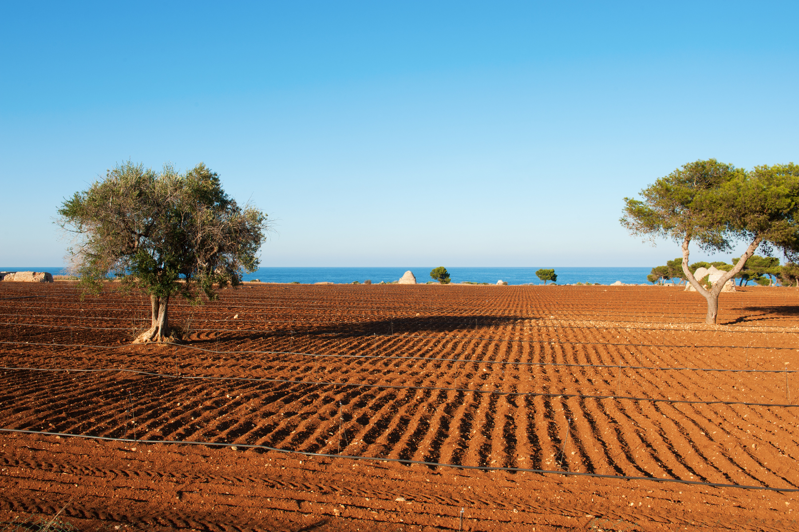

R&D and Product Innovation
Research into ingredients, traditional knowledge, biodiversity and market opportunities, translated into product concepts, formulation briefs and innovation pathways.
We investigate how products, communities, political behaviour and places interact. From food systems and Puglia strategy to geo-historical political intelligence, we turn territorial knowledge into evidence-based action.
casogeographics is a territorial intelligence studio focused on the relationship between products, communities, political behaviour and places. We help companies, institutions, territories and research organisations turn local evidence into development strategies, positioning systems and area-based decisions.
We work through three integrated service lines: Food Intelligence, Puglia Territorial Strategy and Geo-Historical Political Intelligence. Each combines field research, GIS, historical analysis, stakeholder knowledge and strategic interpretation.
Our approach is evidence-based and place-specific. We do not apply generic formulas: we reconstruct how a territory actually works and deploy a strategy built around its structures, identities and opportunities.

casogeographics was founded by Antonio Caso — food historian, development geographer and European project manager with 7+ years of experience at the intersection of Mediterranean food heritage, territorial strategy and EU-funded development.
Author of A tavola con gli Apuli (2019) and A tavola con le Aquile (2024) — two research volumes documenting agrifood heritage across Puglia and Albania. Secretary General of the Fondazione Dieta Mediterranea. His academic work has been presented at CIHEAM MedForum (Montpellier), published on Encyclopedia.pub, and cited in European food policy contexts.
He has designed and implemented 30+ projects across 18 countries, managed over €1M in EU grants, and trained 500+ professionals — building the field intelligence that underpins every casogeographics engagement.
In food, hospitality, investment, public policy and political strategy, the decisive advantage is understanding why places behave differently. Data matters, but it becomes actionable only when read through history, infrastructure, communities and local knowledge.
Territory is not a backdrop. It is a system of resources, memories, networks, institutions and identities. The organisations that understand it first can make better decisions, build stronger strategies and act with greater credibility.
casogeographics exists to give them that advantage.
casogeographics studies territories through products, local ecosystems, historical trajectories and political behaviour. Each service line combines research, GIS, field intelligence and strategic interpretation.

Research and strategy for food products, supply chains and food territories: R&D, product innovation, territorial branding, provenance systems and in-depth Terroir Dossiers.

Independent territorial intelligence for international organisations, investors and professionals seeking to compare locations, understand local ecosystems and develop informed projects in Puglia.

Spatial and historical analysis of votes, institutions and territorial behaviour for think tanks, public institutions, political foundations, public-affairs teams and area-based strategy.
Food is both a product and a territorial system. casogeographics combines food history, development geography, supply-chain research, GIS and market strategy to identify the value embedded in ingredients, producers, landscapes and local knowledge — and translate it into products, positioning and development decisions.
Research into ingredients, traditional knowledge, biodiversity and market opportunities, translated into product concepts, formulation briefs and innovation pathways.
In-depth reconstruction of the relationship between product and place through GIS, landscape analysis, archival research, producer knowledge and supply-chain evidence.
Mapping of actors, flows, bottlenecks, dependencies and opportunities across local and international food systems, from origin territories to market positioning.
Evidence-based narratives, provenance systems, product geographies, food routes and communication strategies rooted in the actual identity of products and places.
casogeographics provides independent territorial intelligence to international professionals, organisations and private clients seeking to understand, evaluate or develop activities in Puglia.
Puglia is not a single, uniform destination. Its cities, coastal areas, rural landscapes, productive districts and inland communities offer different identities, conditions and opportunities. We help clients understand these differences, compare locations, identify relevant local actors and approach the region with reliable, place-based knowledge.
Comparative analysis of different areas of Puglia according to the objectives, priorities and practical needs of each client.
Identification of institutions, businesses, producers, professionals, service providers and potential local partners.
Field visits, preliminary reconnaissance, local meetings and direct analysis of the geographical, social and productive context.
Interpretation of local food cultures, traditions, seasonal practices and community dynamics across the region.
Our role is territorial and strategic. We do not operate as a real estate agency, travel agency, legal advisor or tax advisor.
A research programme applying geography, historical trajectories and political data to electoral behaviour, territorial governance and neighbourhood-level strategy. It combines GIS, electoral analysis, urban morphology, infrastructure, social history and local knowledge to understand why political behaviour changes across places.
The programme introduces the STRATA Framework and applies it to Taranto as an urban electoral laboratory before expanding the analysis through a comparative global atlas. The resulting methodology supports think tanks, public institutions, political foundations and strategy teams seeking area-based evidence rather than generic demographic assumptions.
The complete methodological and comparative report: political geography, the STRATA Framework, the Taranto case study, global geo-historical mechanisms and the Political Territory Dossier.
Download PDF →A concise introduction for think tanks, institutions, political foundations and public-affairs teams: principal findings, practical applications and the neighbourhood-level analytical model.
Download PDF →Data architecture, indicators, formulas, GIS workflow, audit procedures, statistical safeguards, fieldwork protocols and the complete technical basis of the Taranto pilot.
Download PDF →Explore electoral aggregates, candidate geographies, runoff patterns, territorial weight and neighbourhood-level strategic indicators across the Taranto municipal election.
Open external atlas ↗ Comparative political geographySeven comparative cases showing how environmental endowments, historical economies, institutions and settlement patterns can persist in contemporary political geography.
Open external atlas ↗The interactive atlases are hosted as separate lightweight web applications. This keeps the main casogeographics website fast while allowing the analytical tools to evolve independently.
We begin with the product and the places that make it possible. We reconstruct the supply chain, read the landscape and analyse the historical, geographical and productive factors that shape the identity of a food terroir.
We identify the concrete needs of companies, institutions and local stakeholders. The analysis connects territorial assets with market gaps, positioning challenges and realistic opportunities for development.
We translate the research into a deployable strategy or a complete Terroir Dossier. The final output combines territorial narratives, GIS-supported evidence, historical reconstruction and an operational roadmap for valorisation.
"The future of strategy is not a generic model.casogeographics Studio — A Territorial Intelligence Studio
It is a territory — read through data,
history and intelligence."
A selection of consulting mandates, territorial strategies and research projects designed, coordinated and delivered by the casogeographics team. More on request.
An ongoing research programme analysing urban food policy across major European cities. The studies examine how Hamburg, Rotterdam and Brussels are reshaping their food systems — from governance frameworks and sustainability targets to cultural diversity and public health priorities. Each report combines policy analysis, data intelligence and Mediterranean food expertise to extract strategic insights for cities, institutions and businesses operating at metropolitan scale.
Best practices KA220 Erasmus+ project written by Dr. Antonio Caso and coordinated by the Hohenheim University with European Industrial Hemp Association and the CzecHemp consortium. During the project, several training content such as a handbook, a series of podcasts and a scientific state of the art have been developed and the beta-testing of the first European "Hemp specialist" 2-years curriculum has been implemented in Greece and Bulgaria. The project involved partners from Germany, Belgium, Italy, Czech Republic, Lithuania, Bulgaria and Greece
Strategic consulting and operational toolkit design for the XX Mediterranean Games — the largest multisport event in the Mediterranean, with 26 participating nations. Delivered halal-friendly protocols, plant-based food strategy, intercultural training and a public digital portal for HoReCa operators across Taranto. We developed a tailor-made research on food products branding related to the Taranto area, so becoming the official food products of the Mediterranean Games Taranto 2026
A three-year confidential field study assessing the potential for Protected Designations of Origin and Geographical Indications across Albania. Seven supply chains were analysed in depth across the entire country — mapping products, producers, territorial identity and legal eligibility within the EU GI framework. One of the most comprehensive food intelligence studies ever conducted on Albanian agri-food heritage.
Strategic advisory for an Apulian olive oil producer operating in the United States market. Market positioning analysis, competitive landscape assessment and a go-to-market strategy — helping the company strengthen its value proposition for the American premium food buyer.
Full mandate for the design and delivery of the Local Development Strategy — territorial analysis, stakeholder consultation, facilitation of working groups and final document drafting. A four-year strategic framework for rural development in the Daunia area of Puglia.
The following projects were designed, written and — where funded — implemented in partnership with the organisations listed in our partner network. They are the reason those partnerships exist.
Scientific contributions, encyclopaedia entries and international conference presentations — where field research meets academic dissemination.
Encyclopaedia entry published on Encyclopedia.pub exploring the Mediterranean Diet — its historical roots, cultural identity and contemporary relevance as intangible food heritage.
Presentation at MedForum 2021 — CIHEAM Mediterranean Forum (Montpellier, July 2021). Contribution on Mediterranean food systems, territorial identity and GI valorisation strategies in the Euro-Mediterranean context.
Academic research contribution examining Mediterranean food identity, designations of origin and the strategic valorisation of territorial gastronomic heritage within European food law frameworks.
Two complementary realities that cover the full spectrum — from private market consulting to non-profit projects and community initiatives.
A structure designed to maximise impact on every front, with complete coherence of values.
The commercial hub. Consulting, strategy, certifications and development for companies, institutions and international markets.

The non-profit hub. European projects, educational and cultural activities in rural areas, financed by public and EU funds.
![Università di Foggia]() Università di Foggia
Università di Foggia
![Università di Parma]() Università di Parma
Università di Parma
![Pau Costa Foundation]() Pau Costa Foundation
Pau Costa Foundation
Every great project begins with a clear question. Tell us your challenge — wherever food meets business, culture, law or innovation — and we'll design the right answer together.
Phone +39 328 931 8282